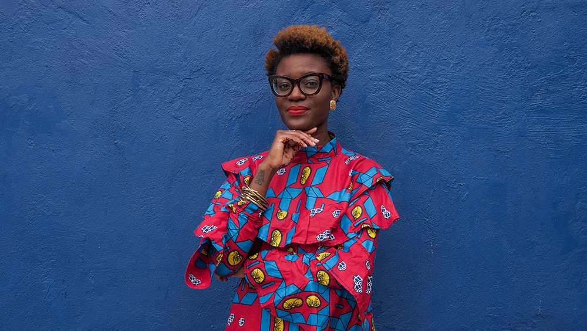

What is your relationship to immigration or cultural passage?
Kimi Hanauer
K.H.
Bilphena Yahwon
B.Y.
I was born in Liberia, West Africa. I was born during the second civil war and moved to Ivory Coast to escape that war. Then in 2001, I came to the United States as a refugee.
How do you sustain your health and spirit? Are there any practices you maintain?
Well, today I had therapy; I started it again today. The work I do is trauma-filled, and in general, niggas got trauma. Because I work at an organization where restorative practices is apart of what we do, we are always talking about our feelings, analyzing how we’ve been harmed and how we harm. Being in that kind of space everyday, you have no choice but to confront yourself you know? While we’ve worked and are still working to cultivate that kind of work space, this work still takes a toll and I find myself taking it home with me. I’ve been trying to be more intentional about not doing that and setting strict boundaries. I want my home space to be free of my work. I want it to be my space to come and reflect and debrief and unload. Starting therapy today was the biggest step for me to reclaim this space.
Story behind this dress: My momma saw Beyoncé wearing something just like this and so she made it for me while in Liberia. Photograph by Adrilenzo Cassoma.
How did you get into the restorative justice work?
When I started working at Restorative Response Baltimore, it was just an extension of what I was already doing as an organizer. Before I got there, I was already saying, you know, abolish prisons, abolish the police, we have to use different methods in how we talk about crime and conflict, especially how we talk about Black kids in schools. So now, this is my full-time job and I get paid to do this work that I was already doing before.
But coming to restorative justice for me was through womanism, specifically after reading The Womanist Reader [edited by Layli Phillips]. It was through reading the Combahee River Collective statement and Angela Davis Are Prisons Obsolete? These Black women thinkers have been talking about the conditions of prisons and the police and their roots in slavery for years. I’m also grateful to people like Devyn Springer @halfatltana on twitter Erica Caines @_Rickii_ on twitter and Mariame Kaba. @prisonculture on twitter Their work around prison abolition has made such an impression on me and I’ve learned and continue to learn so much from them.
What do you think led you into the practice initially as an organizer?
It’s personal. In advocating for what I’m advocating for, I’m advocating for myself as well. I’m a Black woman, I’m a former refugee, an immigrant—all of these identities are at risk. Whether it’s talking about the justice system and prisons, or talking about the disparities in punitive consequences in schools based on race and gender, or talking about Black women dying at the hands of police brutality, or talking about immigration, I am doing work that I wish had been done for me. That is why I do this work and why I do it with so much urgency. One, it is part of my politics, and two, it is personal. When I’m fighting for this, I’m also fighting for myself.
I think about the Combahee River Collective saying “If Black women were free, it would mean that everyone else would have to be free since our freedom would necessitate the destruction of all the systems of oppression.” That sums up why I do this. When I free others, I free myself.
That reminds of me of why my collaborators and I had started our partnership with Baltimore City Community College Refugee Youth Project [a partnership that led to the founding of Press Press] in the first place, where I know you were working as well for a period of time. I wanted to find a way to create a writing and art program for second-language speakers that I wish I had access to when I first came to the states. And in that, it was a way of undoing a type of violence. I feel like that’s something that’s often overlooked—personal experience—when institutions are evaluating candidates for jobs, for example, and thinking about their “experience,” life experience, personal stake, etc. it seems to be often overlooked, even though that’s what often enables people to do the work that they do thoughtfully.
If you look at a lot of nonprofits, who is keeping the nonprofit going? It’s often people who are coming to work because their identity is tied up in whatever they are working on. But who’s at the top? It’s often people who may have the connections to get resources, but don’t have a personal relationship to the work. So what often happens is that you have people of color who are really pushing the work forward the hardest. It’s both a positive to have that experience, and a negative because everything is so personal. We feel it the hardest. We are drained the easiest and we burn out. And that’s what I struggle with so much at work, because it’s not just work. It’s personal. If things go wrong, I take it personally. It’s really hard to disconnect myself and be “objective.”
It’s also such a failure—I mean, it’s on purpose that nonprofits are set up to take advantage of people’s passion and personal stake—but it’s also such a failure because people who can really do the work are expected to operate in environments that can cause burnout.
I do organizing work and if you look at a lot of organizing groups, white people in those groups are always the ones wanting to take risks, wanting to do the boldest kind of direct action. They are the ones who are always like, “Let’s do this protest, let’s do this, let’s do that.” And I always tell people of color, they [white people] have the energy to do that. How they exist is not the same way you exist. They might have good intentions, but because of their detachment they do not assess the harm and lasting impact of these protests and direct actions on us. We can’t afford to not preserve our energy. Even with the work that I do, if we do a circle—whether it’s a restorative justice circle, a dialogue, or a conference—just one circle could drain you completely. But someone who’s not coming from the same place as you won’t understand why you are so tired and are ready to go home from that one experience. That’s something I’m really mindful of when I’m considering productivity and the way people define it. Emotional labor is not quantifiable in these spaces. It’s not seen as work but it is.
Excerpt from teaching gold-mah how to heal herself. by Bilphena Yahwon.
It’s also a question of what is the rubric? So often with nonprofits it feels like it’s about numbers and quantity of work. It’s a problem of funding and capitalism ultimately—we do not value people. How did you get into the writing work that you do? Is there an overlap between your restorative justice practice and the themes you address in your work as a writer?
I got into writing because as a child I did not like confrontations and I didn’t really speak up a lot. As a kid, you’re still trying to understand your own feelings and how to put words to things. So whenever me and my mom would have an issue—whether she hurt my feelings or if I got into trouble—because I didn’t like confrontations, I would write her a letter and put it under her pillow. In the letter I would say, “Hey, don’t come talk to me about it. Write me a letter and I’ll write you back.” So that was our thing. In addition to that, my mom would bring home stacks of composition notebooks and asked me to rewrite stories I had read. Junie B. Jones was my favorite. This also helped me with English; it helped me learn how to be a better writer. So writing for me became the thing that helped me understand myself in the context of a new country. I didn’t always have the words to put to emotions verbally, so I just wrote everything down. It evolved when I started writing the Women in Africa and the Diaspora column for Rise Africa (now Ezibota). That was the beginning of me having a social commentary and being able to write about my values and my social politics. At a certain point, I started to see my writing as an extension of the organizing work I was already doing. Writing was like the theory, and then the organizing was the praxis; it really just went hand in hand for me.
In your most ideal, utopian vision, what would being a citizen mean?
Well, native people would get to reclaim what is theirs because technically they are the only citizens of this country. Being a citizen for me also means understanding what belongs to whom and respecting that, while acknowledging that the concept of borders is rooted in white supremacy. What does it really mean when we say “citizen”? We talk about citizenship from such a Eurocentric framework and I can see it trickling into other places, especially in African countries. I urge people to deconstruct what citizenship means and the entitlements associated with that. But in my utopia, citizenship would be more based in celebration of “home” and cultural identity than dominance. That’s where I’m at. Like, fuck a border, but we still need to honor what belongs to whom.
Excerpt from teaching gold-mah how to heal herself. by Bilphena Yahwon.
Yeah, I always feel conflicted in asking that question and using that word; on one hand I want to challenge it, but in using it I’m also making the assumption that it has to exist. Maybe the question should be, what does it mean to be a community member or a member of the public sphere?
Definitely. Also, how do we begin to deconstruct this need for domination as well? Because that really gets to the core of what it means to be a member of the public sphere.
I’ve been thinking a lot about the idea of “deserving,” or what we feel like we “deserve.” It’s a word that is tied to systems of privilege because, of course all deserve freedom and security, but the way we think about that is informed by the systems we were born into. What makes you feel free?
“No fear!” Nina Simone. [laughs]
Ladin Awad Chapter 11 - Freedom Is No Fear said that too! [laughs]
She [Nina Simone] really nipped it in the bud with that, “no fear.” For me, freedom is having the audacity to be all of you. And part of that is having no fear about the way that you show up and the way you take up space. So to me, that would be freedom: having the audacity to be all of me. We don’t think about how much we aren’t ever all of us; we are fearful of what that may look like or how we may be perceived. For me, it’s just showing up as I need to show up and being as authentically me as possible. And that is hard and a life journey.
What does sanctuary mean to you?
For me, there will never be a sanctuary space for everyone because what is a sanctuary to me could be a form of oppression for someone else. So, I’ve stopped believing that there can be one kind of sanctuary space in terms of cultivating a space, not in terms of citizenship and protection. I think the goal shouldn’t be to create a sanctuary space but creating multiple sanctuary spaces that are exclusive based on our needs.
I’m also trying to think about sanctuary internally. What is the work that I have to do to be able to find a sanctuary within myself? A place where I feel safe within myself? And that’s where therapy has been coming in for me: I’m trying to create a sanctuary within myself.
So we’ve worked together to host this series of workshops on sanctuary, gathering materials from different people who have a relationship to immigration or cultural passage on what sanctuary means to them. Did anything surprise you in any of the workshops?
What I really enjoyed about the workshops is that I changed my mind a lot! I was hearing a lot of things that I hadn’t thought about before. When we think about sanctuary, we think, “OK, this is a space where undocumented [people], refugees, whatever can be here and be safe.” But so many people had inputs and were defining that safety so differently; that’s when I came to the realization of, like, can sanctuary even be a space? Is that even possible? Because even within our small sectors, we still disagree on what it will look like. So that was great because it helped me redefine what sanctuary is for me.
Excerpt from teaching gold-mah how to heal herself. by Bilphena Yahwon.
Yeah, even within our small group in Baltimore, we had this big disagreement in the room on if we are talking about something permanent or temporary, and what that means. I was struggling with that too because I didn’t actually agree with the dominant perspective in the room, but I had to step back and let it happen.
Also thinking about sanctuary in terms of social movements—for example the Black Panther Party, you could say that was a form of sanctuary for a lot of Black men, [but] it wasn’t a sanctuary for Black women. The barbershop has always been seen, in Black manhood, as the place you can go to gossip or to hang out. It is their safe space. While it’s been seen as this sanctuary for heterosexual Black men, it’s not a sanctuary space for queer or trans Black men.
There’s always a disconnection. Maybe it means that “sanctuary” is about how we interact with other people, and having that interaction define the space that forms between us. A few months ago you also hosted a workshop on womanism at Press Press, and I’m wondering if creating that space was also a form of sanctuary-making?
It was. It was a form of sanctuary-making for Black women. I wanted the workshop space to resemble that of a kitchen table. In Black womanhood, the kitchen table is where you gossip, it’s where you drink, it’s where you eat, where you do your hair. The kitchen table is our sanctuary and falls right in line with what it means to be a womanist. Womanism is concerned with the everyday spaces of Black women. We carry womanism. We live womanism. We are womanism. It’s not just an identifier. It’s not just something you do. It’s a way of being, you know? I was talking to my sister Breya the other night and she got a chance to meet Layli Phillips. She said, “You could tell she was a womanist from her spirit. Everything she said and did.” I wanted to cultivate that with our workshop.
Can you tell me a bit about starting your online publication, Goldwomyn, and what motivated you to do that?
I began my online presence through writing the Woman and African Diaspora column for Rise Africa (now Ezibota). This was before I had an online following. I would try to get interviews with certain people for my column and they wouldn’t respond or would respond but be very condescending. I started to notice a trend of people only wanting to be associated with other people with big followings. I was doing great work but it didn’t matter because at the time I didn’t have the numbers to back that up you know? So once I did finally build a following through my column, I decided to launch goldwomyn.com. If people weren’t going to provide me the platform I’d create my own. It’s so interesting to me how once I established this for myself, people who were uresponsive to me were now the ones in my inbox or comments praising my work.
But with goldwomyn.com not only did I want to create a hub-like space, I wanted to give people who didn’t have much visibility a space. I would reach out to people to do interviews, to submit written work, and so forth. Mainly Black and African women of course. While it’s now evolved into a resume for myself, the reason why I decided to launch [in] the first place still rings true.
That’s also such a theme of independent platforms—they seem to almost always be started by people who are doing good work but the publications they are working with are not willing to accurately represent their voice or vision, or won’t interact with them at all, and so people create their own platforms because there’s no other space to accurately represent what they need to get out into the world.
Yeah, that’s literally why. There are some amazing people out here and I want to dedicate an online space to that. It’s also a place for me too, to just do my work. I got so tired from constantly asking people to work with them. I was like, let me just do this, no one can tell me what to do here.
The power shift is also really important, that you are in control of your representation, the platform, and even all of the little details are important, like the design, etc. That stuff may seem minimal but it makes a big difference in how what you’re saying is read.
I basically wanted to create a classroom outside of a classroom. That’s why I’m big on finding PDFs for books and essays that people may not be able to access. People are drawn to Goldwomyn and are able to use it for whatever purpose. There is knowledge that I want you to pay me for, and then there’s knowledge that I want to share; I don’t want to gate-keep. Goldwomyn is that.
Excerpt from teaching gold-mah how to heal herself. by Bilphena Yahwon.
It feels like education as a tool for social justice is such a big part of your practice, in terms of sharing knowledge, access, tools—and you do it through all of these different forms. Even when it doesn’t look like the traditional classroom, it’s still education-based.
Exactly. A lot of people reach out to me about the womanist packet we [Nnennaya Amuchie and I] made and I have to admit that it makes me anxious. I know that Black women’s work will travel further than our bodies will ever be able to. This is something Kimberlé Crenshaw talked about at the 2017 NWSA [National Women’s Studies Association] conference. Initially, I found myself not even wanting to share the packet online because I wanted to protect womanism and the work Nnenna and I had created. But in protecting it, I was also preventing other Black women from accessing it. So I had to let go. The reward of Black women having this packet was greater than the risk.
But I’m still very intentional about making work just for us. The workshop was a Black woman-only space and I was not compromising. I had white women and Black men reaching out about wanting to be in that space and I said no without any hesitation. People with marginalized identities are so uncomfortable with making our shit exclusive and we need to stop. It is okay to say “this is not for white people” or “this is not for men” or “this is not for cisgender people.” Tell ‘em no and send them a link to listen to “F.U.B.U.”
If I say Black I mean Black. If I say Woman I mean Woman.